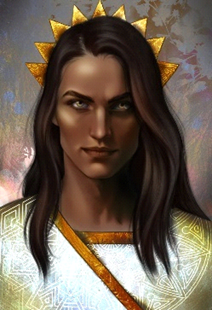

A Corte Diurna é uma das sete Cortes de Prythian e uma das três Cortes solares. Esta corte foi um das três Cortes junto com a Corte Invernal e a Corte Estival a se rebelar contra o controle de Amarantha sobre Prythian. tinha mil bibliotecas que foram pessoalmente saqueadas por Amarantha, e que a Corte Diurna foi responsável por arquivar o conhecimento de magia de Prythian durante séculos. A Corte Diurna é conhecida por sua imensa extensão de conhecimento e suas pessoas pelo dom de inventar.
O Grã-Senhor da Corte Diurna se chama Helion Quebrador de Feitiços, é um homem de pele escura que se veste de branco e dourado. Ele também é o pai biológico de Lucien Vanserra através de um caso que a Senhora da Corte Outonal teve com Helion.
